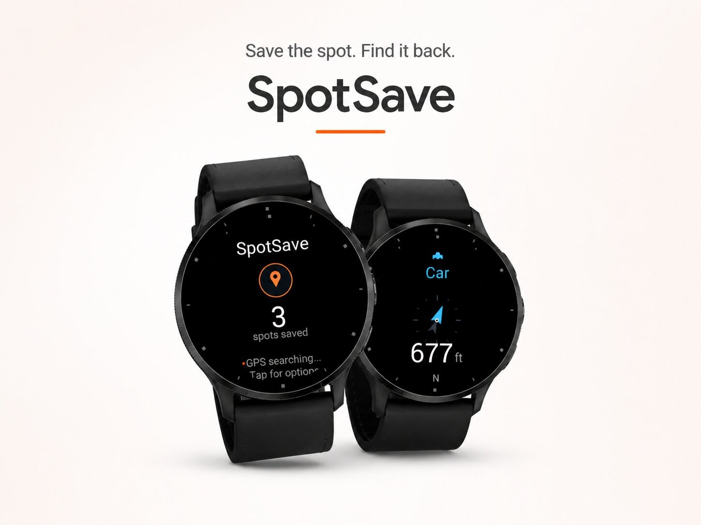
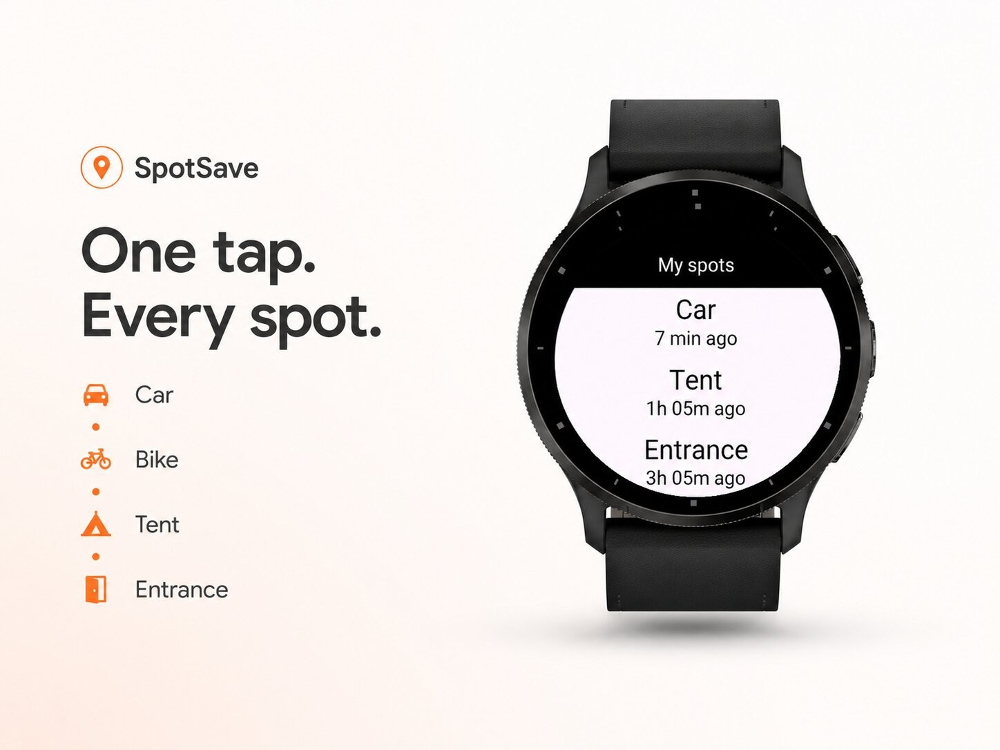
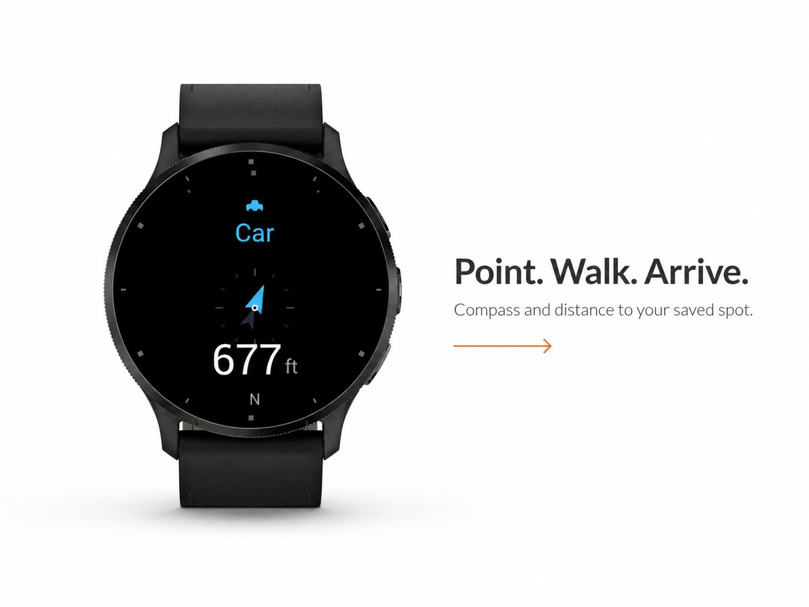
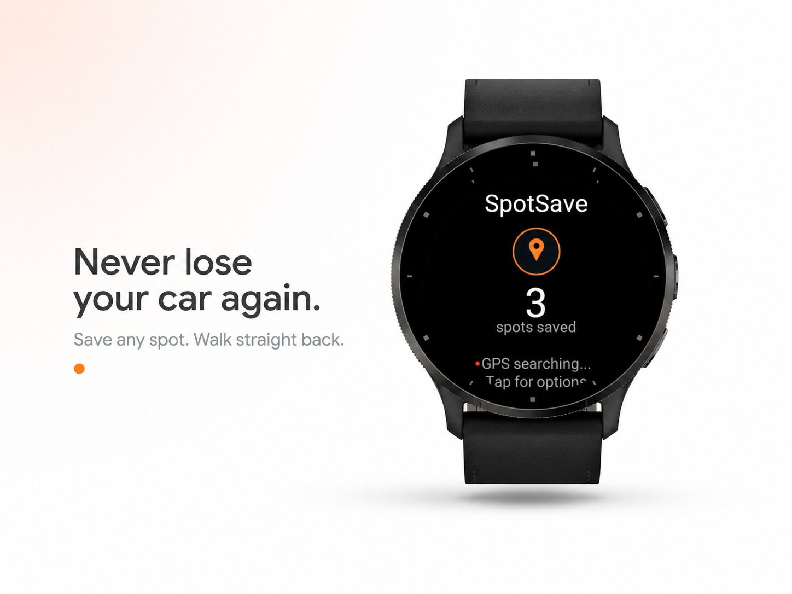

Sport & outdoors · Device app
Save any spot, walk straight back to it.




SpotSave — Save any spot, walk straight back
We've all been there. You park in a massive multi-level garage and twenty minutes later you have no idea which row you were in. You pitch your tent at a festival and after dark every tent looks the same. You walk into a huge hospital, mall, or stadium and can't remember which of the ten entrances you came through. SpotSave is built for exactly these moments.
The idea is simple: one tap saves where you are. Pick a category — Car, Bike, Tent, Entrance, or type your own name — and SpotSave stores your exact GPS location with a timestamp. That's it. No account, no setup, no fuss.
When it's time to head back, open the spot and SpotSave shows a large compass needle pointing straight to it, together with the live distance. Just follow the arrow. As you get close it counts the distance down, and once you're basically on top of it you get a clear "You've arrived." No more wandering in circles.
More than "find my car"
Most parking apps only remember one location at a time. SpotSave remembers many — up to 50 — so your car, your bike, your tent, and the trailhead can all be saved at once. Each spot keeps its own category and shows how long ago you saved it. Browse them in a clean list sorted either by distance (closest first) or by how recently you saved them, whichever you prefer.
Features
Great for
Parking lots and garages · festivals and concerts · campsites · the start of a hike · big buildings like hospitals, malls, and stadiums · ski resorts and lockers · remembering where you left your bike or scooter · travel and sightseeing.
Simple and battery-friendly
SpotSave does one thing well. There's no background service quietly draining your battery — location is only used the moment you save a spot or navigate back to one. Everything is stored on your watch.
Please note: SpotSave guides you with a compass and straight-line distance to your spot, not turn-by-turn street navigation. It points you in the right direction and tells you how far — the rest is a short, confident walk.